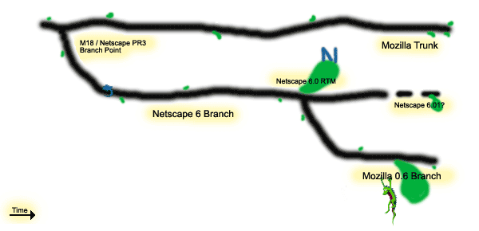

mozilla development roadmap
Welcome to the Mozilla development roadmap. This document briefly describes where the Mozilla project has been, and then details where it is going. It proposes key "road rules" and a release schedule for ongoing Mozilla-the-browser source milestone releases, from which anyone can build commercial and other products. It also hints at how Mozilla-the-platform should evolve, again from an operational or "release process" point of view.
background
The old roadmap recorded the momentous decision in October 1998 to reset the Mozilla project around the new layout engine (now called Gecko), a cross-platform front end (XPFE), now several XP Apps built on an XP Toolkit), and a scriptable components architecture (XPCOM and XPConnect). The old roadmap helped to effect a major course change for Mozilla, but it then failed to track the project's progress -- my fault, no excuses. On the plus side, it did prescribe and promote a number of positive techniques and developments in the code and in the community. But it's old news. Now we need a different roadmap.
Going forward, as netscape.com prepares to ship a commercial product based on Mozilla, we need a roadmap that prescribes fewer technical points and more planning and scheduling techniques. Mozilla doesn't need new features, or any particular "new" or "next generation" module (there will and should be module rewrites, to be sure; there will also be new features, but I'm not about to call for any here). I would do a disservice to say anything on the order of "let's charge over that next hill" when we are still finishing the current architecture and staring down the troublesome aspects of its trade-offs (e.g. leaks due to lack of garbage collection).
Mozilla needs performance, stability, and correctness. We are near the last ten percent of the "Mozilla 1.0" project, where the going gets tough.
near-term tree plan
We staff@mozilla.org propose that Netscape 6 branch for PR3 and stay on that branch through RTM. The trunk continues to take footprint, embedding API, and other fixes, including landings such as IBM's BiDi branch, roc's new view manager, ActiveState DOM scripting support, etc. The rules for what kind of change goes into the trunk when, and who decides, are elaborated below under the new milestones and project management headings.
The checkin rules for the Netscape 6 branch are defined by netscape.com, and are specified in a message from phil@netscape.com. Anyone not following these rules on the branch risks losing CVS access (I say this because mozilla.org is, and must be, the ultimate authority behind vendor branches on cvs.mozilla.org or any other mozilla.org CVS server).
The only thing mozilla.org requests of contributors committing changes to the branch is that they immediately update the trunk with the same change, if it is not a short-term solution that's inappropriate on the trunk (in which case, the long-term solution should be committed to the trunk ASAP, with an open bug tracking the lack of the long-term solution in the meanwhile). Without trunk updates, owners and other contributors to the branch are putting their module ownership on the trunk at risk. netscape.com agrees with this guideline, in general (there may be exceptions; we will play it by ear and keep an eye out for mounting branch deltas).
branch details
The Netsape 6 branch shown here starts with the PR3 (nsbeta3) branch-point. mozilla.org will release branded M18 milestone builds based on the trunk, soon after the time that Netscape releases PR3 (this is a recent change in plans occasioned by desire to pick up trunk fixes in M18, and to relieve pressure on the branch from porting fixes that may unintentionally affect XP files).
Later, the Netscape 6 branch has an optional branch, somewhat arbitrarily named "Mozilla 0.6", at the point where netscape.com does a "release to manufacturing" (RTM) -- the last point at which code available in the branch might change before being compiled into Netscape 6. After this point, the branch exists only to support hypothetical Netscape 6.01, 6.02, etc., releases.
(N.B. that I am not committing netscape.com to these 6.0n releases. I am only stating why the Netscape 6 branch might live beyond RTM. Future Mozilla development should use the trunk, not any long-lived branch.)
The Mozilla 0.6 branch exists only to support MathML and other extensions or "not-quite-plugins" that may depend on Gecko internal APIs. Mozilla users would like to pull tagged sources from which they can build a "replacement Gecko" that includes MathML and that "drops in" to an existing Netscape 6 installation seamlessly.
If MathML and similar extensions all happily work with the Netscape 6 branch
sources at the RTM point, then Mozilla 0.6 can be a static tag that aliases
the RTM tag, and need not be a CVS branch at all. Otherwise, we believe a
branch off the Netscape 6 branch will be needed for whatever fixes enable
MathML, etc.
to work in a "drop in" fashion with Netscape 6. We aim to do as little work
as possible on any such Mozilla 0.6 branch.
code review
mozilla.org, with help from netscape.com, is instituting code review across the board to approve checkins. We hope to increase code quality, better learn and teach best-practices, and avoid immediate and lurking regressions using a group of strong hackers as code reviewers for everyone, just as waterson@mozilla.org and brendan@mozilla.org have been for non-netscape.com contributors so far (per the current checkin requirements).
This new reviewers@mozilla.org group must review and approve all changes to branch and trunk, to make sure the right trade-offs are made in the branch (short-term, absolutely minimal risk) and to guard Mozilla's and Netscape 6's posterity in the trunk (long-term, more risk tolerated for better but non-minimal solutions, modulo the milestone plan and the wishes of project management).
Of course, you can't test quality in, or even code-review quality into a bad design. For better design review and planning, the usual mozilla newsgroups should be used (as they are today) to propose and review design changes and new designs. The new project management team at mozilla.org can help, too. But mozilla.org fundamentally deals in code, and we need to increase our code quality. The best way we know of to do that is to have top hackers review all code (both changes, and the surrounding unchanged code in each modified file).
qa and release
leaf@mozilla.org will produce nightly builds of Mozilla from the trunk and from the Netscape 6 branch (the latter happens as a by-product of turning the Netscape 6 commercial build crank). The branch builds will appear under a new milestone name, call it MN6, on ftp.mozilla.org.
asa@mozilla.org and IRC #smoketest and #qa will QA the Mozilla trunk builds for daily verification. asa@mozilla.org will QA MN6 weekly, testing MathML and other extensions and not-quite-plugins.
We would like to pool tinderbox machine resources to handle both branch and trunk, producing nightly trunk builds for the Mozilla community. We propose to netscape.com that the branch tinderboxes build the Netscape 6 commercial tree only; we hope this suffices for netscape.com's tinderbox needs while the branch lives. This change will require adding Linux, at least, to the Netscape 6 commercial tinderbox group, but it should liberate most of the current SeaMonkey machines to be used for the trunk. The new mozilla.org build lab machines can make up any difference. leaf@mozilla.org owns the details here.
We believe that IRC #mozilla can handle sheriff duties on the trunk, with
dmose@mozilla.org and other staff helping if tree closures are needed. If we
need an explicit sheriff duty roster, dmose@mozilla.org will work with
beppe@netscape.com, trudelle@netscape.com, and others to come up with one.
new milestones
After M18, and starting with Mozilla 0.6 (the name we use to identify Mozilla sources that went into Netscape 6), mozilla.org proposes to reset target milestones for the Mozilla-the-application-suite products (Browser and MailNews at least) among the bugzilla products, as follows:
- Old target milestones (M1 through M30) will be censored from the Target Milestone menu, to avoid clutter and confusion. They will remain within bugzilla's database as long as old bugs refer to them, of course.
- New target milestones of the form mozilla0.6, mozilla0.9, mozilla0.9.1, mozilla1.0, mozilla1.0.1 will be created, up to some upper bound such as mozilla1.2.1 that we can extend later. There will still be a Future target milestone.
- Dig this: these new target milestones will also be keywords. To propose that a bug must be fixed for mozilla1.0, anyone may add that keyword to the bug. To tell whether the bug is likely to be fixed by that milestone, anyone can check the Target Milestone setting in the bug. Developers target milestones as usual. No need for [nsbeta3+] or [mozilla1.0+] status whiteboard spam!
- Mozilla also needs project management, not just community effort in adding target milestone keywords to bugs, and distributed developer initiative in targeting new milestones appropriately. See below under the project management heading for more.
The following table shows the new milestone schedule with very rough dates. We may well slip every one of these milestones somewhat, but we're aiming at quarterly milestones. We do not propose to be exclusively date-driven, or else the Mozilla community may balk at any pretense that Mozilla 1.0 deserves the "1.0" version string. But we emphatically intend to produce regular milestones: the trains will run more or less on time!
If you are a commercial contributor to Mozilla and your schedule has milestones that don't align well with the proposed ones below, please mail staff@mozilla.org asking for a finer-grained milestone, or series of milestones. We'll try to accomodate, first ascertaining at what number of weeks can you stand to "round up" to the next Mozilla milestone.
| 2000 | 2001 | ||||||||
|---|---|---|---|---|---|---|---|---|---|
| October | Later... | Q1 | Q2 | Q3 | Q4 | ||||
| M18 | mozilla0.6 | mozilla0.9 | mozilla0.9.1 | mozilla1.0 | mozilla1.0.1 | mozilla1.1 | mozilla1.1.1 | mozilla1.2 | mozilla1.2.1 |
It's important that Mozilla developers, especially contributors planning to release commercial products based on Mozilla code, be able to count on regular milestones. Developers need to know that if work initially targeted at (e.g.) mozilla1.1 slips, that work can hop on the mozilla1.2 train (remaining configured out of the default build, or #ifdef'd off, or on a CVS branch, until then). We believe, based on experience gained over the last year, that a three-month cycle is realistic, and about as short as the project can get away with when doing significant new development, stabilization, and polish.
The mozilla1.1.1 and similar "half-way" milestones that we hope to do every six weeks are sanity-checking milestones, to help everyone gauge how well progress toward the next quarterly milestone is going. If we find that six weeks is too long to go without a stabilization mini-milestone, we can add mozilla1.1.2 and so on, and switch to a four week period. We don't expect more than a few such minor milestones between major ones.
While we welcome componentization, it's currently the case that all of the
Mozilla sources must be built together. As APIs mature and we freeze them, we
hope component owners will develop their own milestone schedules and deliver
components via their own CVS tags and source (and even binary) releases.
It's the only way to scale up Mozilla and avoid excessive inter-component
dependencies.
But we still envision mozilla.org leading a cross-component milestone and
release "branding" effort, even when mozilla1.5 is merely an assembly
of well-tested components coupled to one another by stable interfaces. That
will be a happy day!
project management
To drive developers looking to help toward bugs needing help in a timely fashion, to moderate risk, and to help commercial projects based on Mozilla manage their product releases, mozilla.org proposes to create a group of project managers, drivers@mozilla.org. (We prefer a short name like "drivers", with transportation connotations, to "project managers").
The people we have in mind are:
- David Baron, dbaron@fas.harvard.edu
- Chris Blizzard, blizzard@redhat.com
- Asa Dotzler, asa@mozilla.org
- Brendan Eich, brendan@mozilla.org
- Warren Harris, warren@netscape.com
- Robert O'Callahan, roc+moz@cs.cmu.edu
- Tim Rowley, tor@cs.brown.edu
We don't want to over-specify the processes these folks will use, or try to guess what techniques they'll come up with. We picked an odd number (seven, not too large, lucky, and magnificent) to avoid ties. We expect accountability and community satisfaction from drivers (who own the project management "module"), as from any module owner.
At a minimum, we require that the drivers use the new bugzilla target-milestone keywords to sort bugs according to the quarterly schedule, take account of the Mozilla community's wishes, and help deploy and recruit developers to fix the targeted bugs in a well-ordered fashion. The drivers should of course document each milestone's intended and likely content, and the scheduling rationales used to define milestones, in public documents and newsgroup postings.
Beyond that, we delegate to the drivers.
It is likely that we'll be spending a fair amount of effort tracking
dependencies, revising the schedule, and coordinating developers.
document history
draft 3
Finalize version numbers to 1.0, 1.1, 1.2 with intermediate milestones at 1.0.1, 1.1.1, etc. as needed. Mention M18 in the prose, as well as show it in the branching diagram and the milestone table. Use Ian Hickson's better PNG branching diagram image.
draft 2
Version numbers are not real numbers, they're integer pairs (thanks to ianh@netscape.com for provoking this). Fix table bgcolor to be less dark a gray.
draft 1
Retire the old roadmap. Propose new milestone schedule, code review, and project management processes.